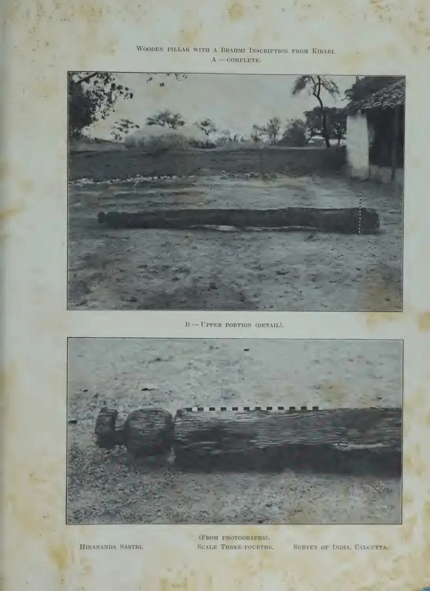
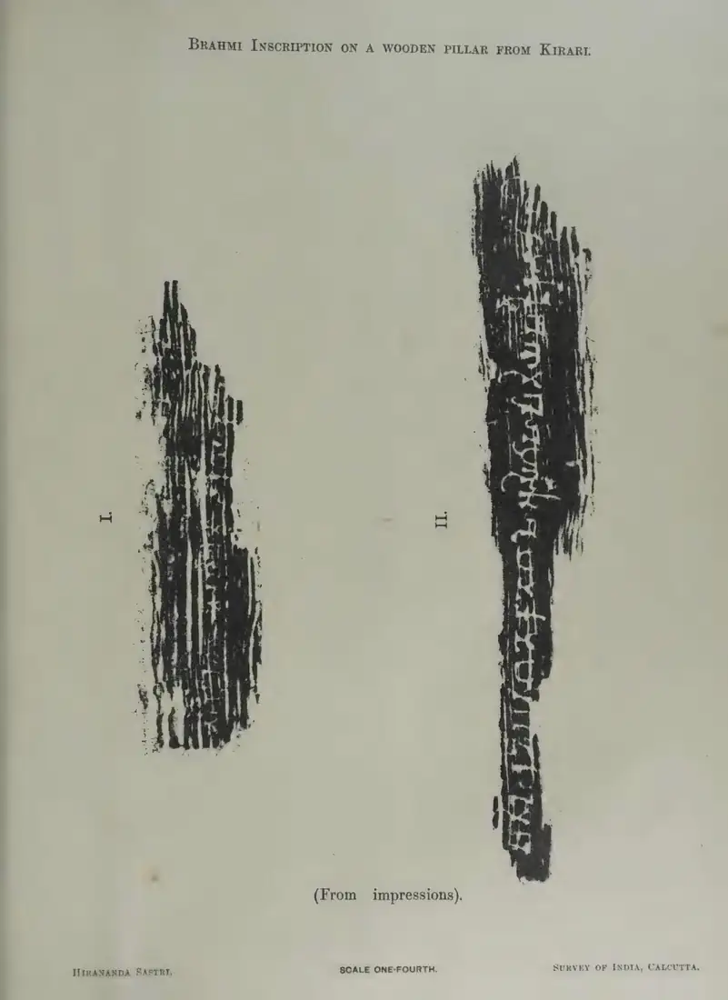
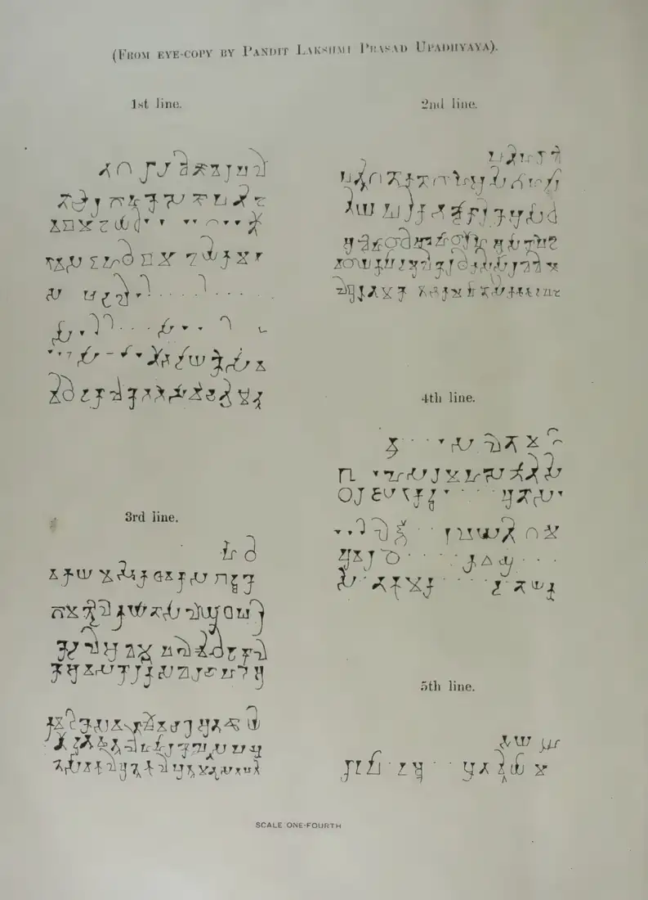

Brahmi inscription on a wooden pillar from Kirari
No. 19.—BRAHMI INSCRIPTION ON A WOODEN PILLAR FROM KIRARI.
BY HIRANANDA SASTRI, M.A., M.O.L.
Kirārī is a small village in the Chhattisgarh Division of the Central Provinces. It lies some ten miles to the west of Chandarpur and about twenty miles to the south-east of Kharsiā, which leads to the Jogimārā cave, so well known for its very ancient fresco-paintings as well as early Brāhmī inscriptions. The river Mahānadī flows some four miles to the south of it. Outside this village there lies a large and old tank called Hirābandh which is rather an embankment meant to collect the overflowing rain water at the time of floods. Owing to draught this tank had dried up and in April 1921 the agriculturists of the village began digging its bed to throw the fertilizing silt over their fields. On the 29th or 30th of that month they hit upon a wooden pillar which they removed from the mud and placed in the sun, not knowing the disservice they were doing thereby to the cause of Indian Epigraphy for, the moment the pillar began to dry a good deal of its surface peeled off carrying with it the major portion of the invaluable record which was incised on the pillar. Noticing that the pillar bore some letters on it some of the villagers called their Pandit, named Lakshmīprasāda Upādhyāya, to see if he could read the writing. Failing to make it out he very carefully took an eye-copy of all the letters which he noticed on the pillar at the time of his arrival, not omitting even the faintest traces of a letter over it. Apparently, he was not aware how the record ran, which side came first or which was the top or bottom of the letters. Like a true copyist he wrote out each line separately on sheets of paper available to him at the time according to the maxim of writers :—
यादृशं पुस्तकं दृष्टं तादृशं लिखितं मया । यदि शुद्धमशुद्धं वा मम दोषो न विद्यते ॥
1 This is a doubtful translation of the word दीपलक्षम. I propose to take it as an avayībhāva deriving it दीपा लक्ष्यने यमिन् कर्मणि इति. [दीपा: लक्ष्य यमिन्, etc., is another suggestion—H. S.] If this interpretation is correct, it shows that the Pallava rule must have extended in the time of Rājasiṅha even to the distant islands in the ocean. The word दीपलक्षम may also be corrected into दीपलक्षात् and with आ repeated we may translate ‘ up to the thousand islands.’
Could there be a reference by dhvani in the word दीपलक्षम to the Laccadive Islands called लक्षदीप in Sanskrit? The exact relation that might have then existed between the Pallava king Rājasiṅha and the Laccadive Islands has nowhere been found. In this connection it may not be out of place to point out that Dr. Vogel in his learned contribution on the Yūpa inscriptions of king Mūlavarman from Koetei (East-Borneo) (Nederlandsch-Indië, 1918, p. 192) asks :—“ Supposed the powerful Pallava princes of Kāñchipura had equipped armadas and carried their arms to the remote shores of Champā and Java, may we not assume that their conquests on the far side of the ocean would have been extolled in their praśastis with no less effusion than we find lavished on their victories over the Chālukyas? ” Here we have, though not a praśasti, at least a significant hint that the Pallava dominion was ambitious enough to extend to the distant islands.
so often found at the end of the manuscript copies of Sanskrit books. How faithful his copy is can be judged from the facsimile of the mechanical impressions of the portions which were copied when I first inspected the pillar in 1921 and which were still intact when I again examined it in 1924 at the Nagpur Museum. Comparison will show that the eye-copy can be taken as quite trustworthy in the case of the portions which are now lost for ever. The fact that the copyist did not even understand which side represented the top and which the bottom of the lettering precludes the suspicion of forgery altogether. How he succeeded in bringing out the shapes of the letters accurately is, I think, due to the little knowledge of drawing which he possessed and to his intelligence. But as the fact remains that those portions of the epigraph do not exist now, we would naturally feel hesitant to draw large conclusions from the hand-copy. The Pandit took a copy of not less than 349 aksharas whereas at the time of my first inspection the pillar had not more than 60 or 70 letters and now not more than 30 or 40 including the traces of vowel marks. The Pandit's eye-copy was handed over to my draftsman at the time of my visit to Kirārī and I have used it in preparing the comparative facsimile plate as well as in reading the lost portion for which it was the only source now to depend upon.
The find was next brought to the notice of Pandit Lochan Prasad Pandeya of Balpur, a village attached to the Chandarpur Post Office, not very far off from Kirārī. He promptly brought it to the notice of Sir John Marshall under whose instructions the pillar was immersed in water in a tank at Kirārī where it lay till it was finally removed to the Government Museum at Nagpur after being very carefully treated chemically for the preservation of the writing on it. The Museum authorities have now cut it into two parts, one of which, i.e., the upper portion, they have placed in a glazed case, accommodating the other in an outer verandah of the Museum. The former still shows not less than twenty-two continuous letters more or less distinctly, while the latter retains traces of lettering here and there and some three or four complete aksharas as well. The fate of the lower portion cannot fail to remind us of the all powerful law of nature which permits the survival of the fittest only!
As has been stated above, the pillar is wooden and measures about 13' 9" from top to bottom. It is surmounted by a solid kalaśa which is about 1' 2" high. The kalaśa has a narrow neck, a broad and almost flat mouth, the body being more elliptical than round. I am reproducing here two of the photographs which were taken at the time of my inspection during 1921 to replace further description of this interesting find. The surface of the pillar has badly flaked and I cannot positively say if it was shaped into facets and planed, at least at the middle, for writing the inscription. The lower portion, in all probability, must have been left unshaped, as it was meant for insertion in the ground. I got a few chips of the pillar examined and am told that the tree of which it was made belongs to the order of Leguminosae papilionaceae and its botanical name is Pterocarpus marsupium, the Hindi name being Bijā Sāl. This tree gives a handcome and useful timber of Central India and is almost as good as teak.
This find, I believe, is the first of its kind yet made in India. So far some four sacrificial posts have been found in this country and perhaps a similar number in Koetei in the Indian Archipelago. All these have recently been noticed by Dr. Vogel in his paper on the Yūpa Inscriptions of king Mūlavarmman. They are all of stone and appear to be memorial yūpas for, sacrificial yūpas, as would be shown by the terms yūpa-dru, yūpa-druma or yūpa-dāru, were usually made of wood. Possibly these were put up instead of the wooden pillars or yūpas and were their exact copies in stone. A close comparison of the illustrations of these pillars and of the one represented on the aśvamēdha coins of Samudragupta the Great, with the photograph of the Kirārī pillar, herein reproduced, will show that the latter cannot be a yūpa or sacrificial post. The description given of a yūpa in the Śatapatha-Brāhmaṇa would point towards the same inference
According to this authority1 the shaft of a yūpa, except for the lower portion, should be octagona and bent at the top. At the same time a yūpa is distinguished by a head-piece or top-ring (cha. shāla) and marked by a girdle rope (raṣanā) which winds round it. The Kirārī pillar reveals none of these characteristics. Taking it for granted that all the eight corners and the 17 cloths with which, according to this authority, a sacrificial post is to be wrapt or bound, have disappeared, we cannot account for the absence of the hollow at the top and the disagreement in height which ought to be 17 cubits in the case of a yūpa. But as the Brāhmaṇa gives different heights for different purposes and says that “ the sacrificial stake of the (ordinary) animal sacrifice is either three or four cubits long and one above that belongs to the Śōma sacrifice ” we cannot depend on the length of the pillar for its identification. That it cannot be a yūpa or pillar connected with animal sacrifice will be shown by a reference to Patañjali who in his Mahābhāshya clearly puts down2 that a yūpa must be made of either Bilva (Ægle marmelos) or Khadira (Acacia catechu)—
“ बैल्वः खादिरो वा यूपः स्यात् ” इत्युच्यते । यूपश्च नाम पश्वनुबन्धार्थमुपादीयते ।
शक्यं चानेन र्यात्किञ्चिदेव काष्ठमुच्छ्रित्यानुच्छ्रित्य वा पशुरनुबन्धम् । तत्र नियमः क्रियते ॥”
As I have already stated, the Kirārī pillar is made neither of Ægle marmelos nor of Acacia catechu but of Pterocarpus marsupium. In the Rāmāyaṇa3 of Vālmiki, however, it is stated that 21 yūpas were erected at the time when a horse sacrifice or Aśvamēdha was performed by Daśa-ratha. Out of these six were made of Bilva (Ægle marmelos), six of Khadira (Acacia catechu), six of Palāśa (Butea frondosa), one of Ślēshmātaka (Cordia Myxa or Latifolia) and two of Dēvadāru (Avaria longifolia and Erythroxylon sideroxyloides or Pinus deodar). Including the one added by Monier Williams in his Sanskrit Dictionary4 we find that the pillar under examination cannot come within the category of yūpas as far as the tree of which it is made is concerned. In other words the Kirārī pillar cannot be connected with any animal sacrifice (paśva-anubandha) on the authority of Vālmiki and Patañjali at least. The description given in the Śatapatha Brāhmaṇa is not free from confusion and if we follow it, I think, the Kirārī pillar might be connected with the Vājapēya rites. The top portion does not provide a very convenient seat for the householder to occupy at the time he has to hold a dialogue with his wife in reference to their mounting to heaven. Still, as we learn from the Brāhmaṇa,5 in
प्राप्त यूपोच्छये तस्मिन् षष्ठैर्लग्नः खादिरास्तथा ।
तावन्तः विल्वसहिताः पर्णिनश्च तथा परे ।
श्रेष्मातकमयी दिष्टौ दंबदारुमयस्तथा ।
चावेव तत्र विहितौ बाहुव्यस्तपरियहौ ॥
1 Śatapatha Br. S.B.E., Vol. XLI, p. 31, and Vol. XLIV, p. 124. The height of a sacrificial stake has to vary, for the Brāhmaṇa says : “ When he who is about to perform an animal sacrifice makes a stake one cubit long, he thereby gains this (terrestrial) world ; and when he makes one two cubits long, he thereby gains the air world ; and when he makes one three cubits long, he thereby gains the heavens ; and when he makes one four cubits long, he thereby gains the regions.”
2 Adhyāya I, Pāda I, Āhnika 1.
3 I, 14, sts. 22—25.
4 Under the word yūpa and in reference to the Rāmāyaṇa he has brought in one yūpa of Udumbara (Ficu-glomēra'a) saying 6 of Bilva; 6 of Khadira, 6 of Palāśa, one of Udumbara, one of Ślēshmātaka and one of Dēvadāru. The text would not support this division for, it makes no mention of the Udumbara yūpa. It runs as follows :—
The words drārēva as explained by the commentator Rāma (dvau dēvadārumayau vīhitau) near: two of Dēvadāru and make no room for Udumbara. Possibly Mon. Williams had another edition before him.
5 See S. B. E., Vol. XLI, p. 31, and footnotes, etc. ; also Barnett's Antiquities of India, p. 167, and references given above.
Plate 1 is bound after this page.
some cases he has to ascend a yūpa by a ladder, touch the mortar-shaped top-piece made of wheaten dough, rise by the measure of his head over the post and descend after performing certain rites. Our pillar could serve such a purpose very well. But here we should remember that Vājapēya is one of the several Sōma sacrifices which kings or Brāhmaṇs have to offer before celebrating the Rājasūya and the Brīhaspatisara. Why should a sacrificer select a thing connected with a rite which is after all a minor one as compared to the principal Yajña and write a large inscription on it giving the names of very high officials such as this pillar bears? To solve such a question satisfactorily one would like to explore the site where the pillar was unearthed and see if any vestiges of some other sacrifice or sacrifices are to be found there.
The association of a reservoir or tank (Hīrābandh) might suggest this pillar to be an ordinary tank-pillar, such as we see erected in the midst of tanks in the Central Provinces or elsewhere. But then, we have to remember that such columns are generally of stone. Besides, there would be no reason why such an important record should be incised on it mostly to remain hidden under water. Another likelihood may be that it was a jayastambha or column of victory, but there too, looking at the position of the personage responsible for its setting up and of the officers connected with him, it will be quite reasonable to expect a more permanent and dignified material than an ordinary bija tree of which the pillar is made. The other alternative would be that it was a dhvajastambha or a flagstaff connected with some temple for, that may be made1 of stone or wood, circular, sixteen- or eight-sided and shaped like a kumbha (pot) at the middle or at the beginning. Its height varies according to its nature. The emblem (vāhana) of the god to whom it is dedicated is to be put on it together with the banner cloth (dhvaja-paṭa). Such an assumption would naturally suggest the existence of some structure close by and until we find any traces of it we are not in a position to call the pillar a dhvajastambha. Whether it is a post connected with the Vājapēya or similar rites or a dhvajastambha, the fact remains that it is a unique find yet made in India.
The writing on this pillar very closely resembles that of the Nāsik cave inscriptions.2 Leaving aside other symbols the one for khi is particularly noteworthy. In the two impressions reproduced here this is represented by the fifth letter while in the Nāsik cave inscriptions it is to be seen in the word dhamarakhitēna though in another word, i.e., in bhikhusaṅghasa, it is written in a different manner. Regarding the age, I am to remark that on palæographic grounds the record is to be assigned to about the second century of the Christian era. The extant portion shows no trace of any date in it. It is chiefly on account of its age that this relic of the past possesses considerable epigraphical value for, early Brāhmī inscriptions are rather very rare. As an historical document, however, one will be sorry to find that whatever importance it had originally is now irretrievably lost with the portion that has peeled off. What we may now surmise from the nature of the contents as they are at present is that the inscription must have been connected with some mighty ruler of a very high rank who had a well-organized staff of officers such as the Commander-in-Chief, the Accountant, the Treasurer, etc., etc.
The language in which the document is couched is Prakṛit, or one might call it corrupt Sanskrit prose. It is like the language of the Nāsik inscriptions alluded to above.
As to the nature of its contents I am to observe that the record now mostly consists of official titles or designations and the names of some of the individuals who must have held them.
1 Cj. Śilparatna (Trivandrum S. S. No. LXXV), p. 234 :—
श्रिलया दारुणावाय वचाकारमयापि वा ।
षीडशायं तु वाष्टायं कुम्भमध्यादिसंयुतम् ॥ etc., etc.
2 See above, Vol. VIII, No. 18, plate V (n. 3).
Such of the designations as are practically certain together with the names of a few of the incumbents as are still intact or can be made out are these: Nagararakhins (city-guards or police-inspectors) named Virapālita and Chiragōhaka; Sēnāpati (commander of army) named Bāma1dēya1 (?) (l. 1, stampage and eye-copy); Pratihāra (door-keeper) named Khipatti; Gaṇaka (accountant) called Hēasi, a Nāga; Gāhapātiya (?=gārhapatiya, keeper of the house-hold fire) named Gharika; Bhāṇḍākā(gā)rika (store-keeper) called Asādhia; Hāthārōha (?=hastyārōha or ? the king's elephant-driver); Aśvārōha (horseman, perhaps Superintendent of horses); Pādamūlika2 (temple attendant); Rathika (possibly the Superintendent of chariots); Mahānasika (kitchen-officer), (l. ii, stampage and eye-copy); Hathivaka (=hastipaka, perhaps Superintendent of elephants); Dhāvaka (fore-runner); Sa[u]ga[ndh]aka (=Saugandhika, officer in charge of perfumery ?); Gōma[ndi]lika (=gōmāṇdalika, or officer in charge of cows or cattle ?); Yāna[ś]ālāyudhagharika (officer in charge of carriage-shed and armoury); Palavīthida(ka) ?)vā-(pā)lika (Inspector of meat-stalls); Lēhahāraka (=lēkhahāraka, letter-carrier); Kulaputraka3 (perhaps chief architect); and Mahāsēnānī or Commander-in-Chief (l. 4). It is interesting the observe here in passing that these designations do not fail to remind us of the several functionaries like Aśvā hyaksha, Hastyādhyaksha, Rathādhyaksha mentioned in the Arthaśāstra of Kauṭilya. As I have already remarked above the mention of all such persons of rank would show that our pillar must have been set up in connection with some extraordinary ceremony performed by a very high personage who was, in all probability, not less than a great king of renowned, whose name is now cast into oblivion but, perhaps, would have been preserved had photographs or mechanical copies been carefully taken the moment this important relic of the hoary past was dug out. In line 4 of the eye-copy there is a name which comes after the title of Mahāsēnānī and reads like Siṭha(dha)rāja. A few letters after it we have a word which reads putasa (putrasya), and then comes a verb which may be taken to be arpayati. This might indicate that the pillar was in some way connected with Si[dha]rāja or his son. The proper names of some of the officers, which are fully preserved on the pillar, like Khipatti or Hēasi are, apparently, non-Sanskritic. The latter, i.e., Hēasi, is distinctly called a Nāga or a member of the Serpent tribe. Possibly these people were non-Aryan or aboriginal.
The portions of the two lines which were copied at the time of my first inspection and are represented in the facsimiles may be transcribed as follows:—
No. 1.
(PART OF LINE 1.)
Text.
Nagar[a]rakhinō V[i]rapa(ā)lita-Ch[i]ragōhaka-[Sēnāpatid]ēva.
Remarks.—Nagararakhinō possibly stands for nagara-rakshiṇau and means the two guardians of the city or police-officers. These were named Virapālita and Chiragōhaka. The first is more an attribute than a proper name. The second looks to be of non-Sanskritic origin. The name of the Sēnāpati or commander of the army is not certain but might have been Deva1.
1 See footnote 2 on page 157.
2 Pādamūlika is a derivative of pādamūla which occurs both in Sanskrit (see Kielhorn's note in Ind. Ant. Vol. XXVII, p. 252) and Tamiļ inscriptions (see S. L. L., Vol. III, p. 138 n. and p. 250) apparently in the sense of a temple attendant—one attached to the feet (of the god). It frequently occurs in the Jātakas. From the Parantapa Jātaka (Jātaka, Vol. III, p. 417, lines 2 and 3) it would appear that pādamūlikas were associated with purōhitas for it says 'dēviñ cha purōhitañ cha Paratapañ nāmēkañ pādamūlikañ cha gahētvā,' etc. In this inscription the term comes after the word dēvathāyaka, which reminds us of dēva-sthānika. So the word seems to signify a priestly attendant or one whose function is to attend to the feet of (i.e. worship) god or do some such duties.
3 See Ep. Ind. Vol I, p. 58; Vol. IX, p. 58. The word usually means 'sons of non-men.'
Plate 2 is bound after this page.
Plate 3 is bound after this page.
No. 2.
(PART OF LINE 2.)Text.
P[r]ati[hā]ra-Khipat[t]i-gaṇakā(a)—Nāgō(a)-Hēasi-gāhapātiya-Gharika-bh[ā]ṇḍak(g)āri[ka].
Remarks.—The first word is certainly pratihāra which means door-keeper. The second word may read vaipatti signifying good foot soldier but comparison with the Nāsik cave inscription, referred to above, would show that it must be read as Khipatti. The conjunct t is partly visible in the impression but clear on the eye-copy. What follows must be gaṇaka. Had the preceding word been vaipatti one could take it, in reference to the Kīrātārĵunñyam (XV. 16), in the sense of 'an officer whose chief function is to muster the infantry or superior foot-soldiers.' But I prefer to read the first akshāra as khi and would take gaṇaka in the sense of 'accountant'. The word that follows, i.e., Nāga, indicates the tribe to which Hēasi belonged. Hēasi is apparently an aboriginal term. Gāhapātiya1 I would connect with the word Gārhapatya and translate as the keeper of the household or gārhapatya fire. Gharika must have been the name of this officer and is perhaps an apabhramśa of grihika (?) as is gharinñ, the Pāli form of grihinñ. The word that follows is certainly the equivalent of Sanskrit bhāṇḍāgārika and means 'store-keeper'.
Now I give a transcript of the eye-copy, as far as I have been able to make it out, for what it is worth, or rather to satisfy a curiosity. In the facsimiles the impressions of the existing portions of the epigraph and the whole of the eye-copy are reproduced. The paper used by the Pandit was of a small size. So lines could not be brought out in their full length. Taking the entire lines into consideration, the inscribed portion of the pillar measures about 8 feet and the eye-copy approximately supplies ĝ of the actual size of the letters on it. The text given below follows the order in which Pandit Lakshmi Prasād copied the inscription.
Text.
(Line 1.) Naga[ra]-rakhinō-V[i]rap[ā]lita Chirag[ō]hakē Sē[n]āpa[ti]-[Dē]va2 bama[dē]-yādhi....g(?).. nautāvasa(b?)hathi bama [dē]yikama . sa paṭali . i .... i ....sā . i. i. ....sā . i ....sā . ā . nō bhatāya kēs[a]va=vīthidakāmik(a or ē) tatē (or bhabhē) sāviḍa (n)im[i]tta.
(Line 2.) P[r]atih[ā]ra Khipatti ga[ṇ]ka-Nāga Hēasi gāhapātiya Gharika-bhanḍā-kārika Asādhia vaihāthādhiāra hathārōhē asārōhē dēvathayaka pādamūlika rathika sisāra khakhimala (?) butanamaka tabhaka mahānasika kukuḍabata.
(Line 3.) Hāthivaka yamasrika dhāvaka sagandhakē gōmaṇḍilika yānasālāyudhagharikē daliakhēmha (?) palaviṭhida vālikē avasakāraka sava(or kha)radāpa(or ha)dēaka vadi Kēsavanāshō(?) vacharē anu . yinō dunuvṛitta lēhahārakē pētsa (?) payutasāva (?) kuli(la)pūṭtra kuli(la)puttramanusēn[ā]pati.
(Line 4.) Vu . . . salinama . [bu] . hēsara mah[ā]sēnāni Siṭhar[ā]ja . . Kudva (?) . . . putasa . . . . pijta (?) . . rapayati game puvarathi . . . . kavayu . . . sē . na k[u]m[ā]rō . . . . ḍa . nāyaka
(Line 5.) Bhayayu (or ghē ?)ra (da)pā . ṭa(?) (a?) . . puna[vi?]yā ma
1 Gāhapātiya is a proper name, also, see Burgess, Cave Temples, p. 89.
2 Dēva may be taken as a proper name, and bamadēya may stand for brahmadēya. That will give us more official, to wit, one in charge of charities ?


